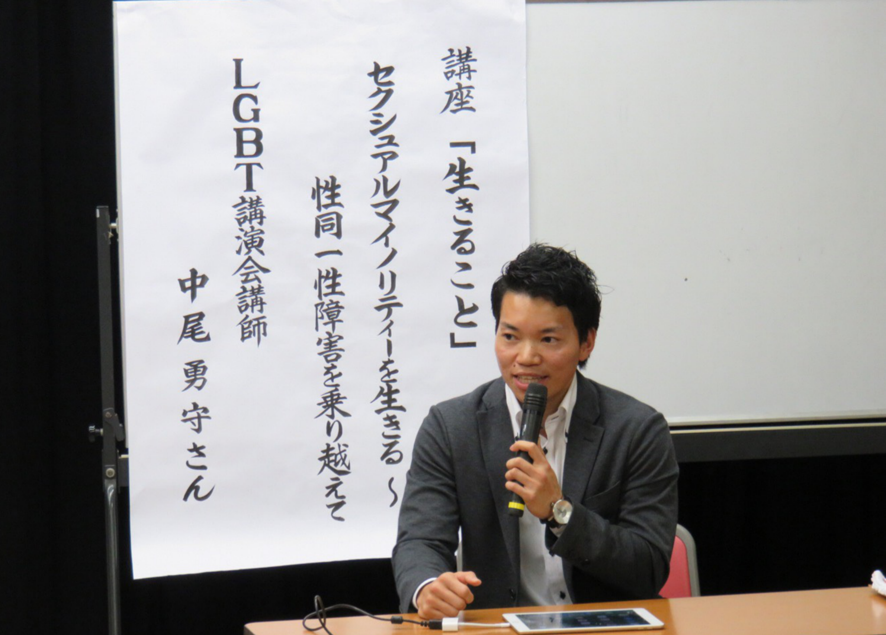

Lecturer
講演家としての顔
トランスジェンダー当事者として、実体験をもとにお話しします。 また教育現場での経験から、学校対応や、親御さん対応、 地域との連携など具体的な例もご紹介しております。
Lecturer/Radio Personality
勇気と理解、そして想像力を持って生きる。
小学生から大学卒業までバスケットボールに打ち込む。 大学卒業後、中高一貫校で保健体育教師として3年間、小学校2校で学童保育指導員を経験。 2015年からトランスジェンダー当事者として、教育現場を中心に人権教育講師として活動を開始。 新聞掲載、関テレドキュメンタリー番組に出演、メディカ出版「LGBTサポートブック」共著。 ラジオ番組「らいと」にてパーソナリティを務める。
[座右の銘]
悲劇とは、悪人の圧制や残酷さではなく、善人の沈黙である - キング牧師
トランスジェンダー当事者として、実体験をもとにお話しします。 また教育現場での経験から、学校対応や、親御さん対応、 地域との連携など具体的な例もご紹介しております。
FMゆめのたね放送局にて、番組「らいと」のパーソナリティを務めています。 誰もが持つ「生きづらさ」そして、「権利(right)」にライトを当て、 その現場や、ゲストを呼んでのディスカッションの様子を放送中。
番組「らいと」はこちら
∼ 性同一性障害を乗り越えて ∼
LGBTの現状と未来
性的マイノリティを生きる
性別って何？
人権教育の視点から学ぶ合理的配慮
LGBTの基礎知識や、学校での対応例など。
実際の困り事をヒアリングし、
そこにアプローチした内容も可能です。
お気軽にご相談ください。

生徒向け講演: 2～3万円
教職員研修: 3～10万円
地域・PTA向け: 3～15万円
※過去講演実績より
お気軽にご相談ください。
近畿地区国立大学附属学校連盟人権研修
北河内7都市人権研修
大阪教育大学附属天王寺中学校・高校
枚方市立長尾中学校
宝塚市教育委員会
貝塚市立貝塚第五中学校
京都市教育委員会
京都中丹地域教職員組合
島本町立島本第三小学校
羽曳野市立高鷲南小学校
堺市立長尾中学校
柏原市立堅上幼小中合同研修会
豊中市立豊中第一中学校
全国女性教職員組合研修
貝塚市立貝塚南小学校
柏原市立柏原中学校
堺市立榎小学校
京都府立乙訓高校
貝塚市立貝塚第三中学校
八幡市立男山第二中学校
大阪府立千里青雲高校
枚方市立山田小学校
堺市管理職研修
岸和田市立岸城中学校(夜間)
東大阪市立楠根中学校
堺市立浅香中学校
立命館高校
堺市立錦小学校
枚方市立明倫小学校
岸和田市立岸城中学校
京田辺市立田辺中学校
四條畷学園教職員研修
堺市日置荘西小学校
長岡京市長岡第五小学校
堺市教頭会
四條畷中学校
城陽市立城陽中学校
綾部市教育委員会
その他多数
枚方市立長尾中学校
倉敷市立真備陵南高校
貝塚市立貝塚第五中学校
大阪府立藤井寺工科高校
島本町立島本第三小学校
堺市立長尾中学校
貝塚市立貝塚南小学校
大阪府立かわち野高校
柏原市立柏原中学校
京都府立乙訓高校
貝塚市立貝塚第三中学校
貝塚市立貝塚第五中学校
島本市立島本第一中学校
枚方市立中宮小学校
八幡市立男山第二中学校
寝屋川市立北小学校
大阪府立西寝屋川高校
大阪府立千里青雲高校
枚方市立山田小学校
四條畷市立四條畷中学校
京都府立西舞鶴高校(通信)
大阪府立泉陽高校
立命館大学
柏原市立堅上中学校
大東市立南郷中学校
東大阪市立楠根中学校
大阪府立春日丘高校(夜間)
堺市立大浜中学校
長岡京市立神足小学校
堺市立浅香中学校
立命館高校
堺市立東百舌鳥中学校
堺市立錦小学校
枚方市立第四中学校
京田辺市立田辺中学校
長岡京市立長岡第十小学校
大阪府立西寝屋川高校
箕面自由学園中学校
城陽市立城陽中学校
その他多数
寝屋川市役所
四條畷市役所
東大阪市役所
枚方市役所
堺市立堺高校
大東市役所
池田市役所
長岡京市役所
枚方市社会福祉協議会研修会
長岡第八小学校区「8スルくらぶ」設立記念講演
南丹市人権講座
月州中学校区・青少年健全育成協議会運営委員会 研修